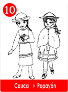
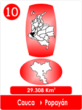
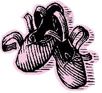
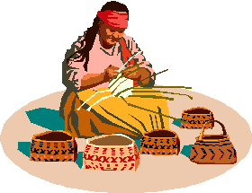

10 Escudos del Pie - Cauca.
- Consulta a Jesús
- Fábulas de Colombia
- Metodo Corima
- Arbol
- Flor
- Fruto
- Estrellas Pequeñas
- Nostradamus
- La Ruta del Sol
- Fabula de Corima
- Productos y Servicios
- Mensajeros Celestiales
- Juguemos
- Articulos
- Estrellas Humanas
- Herramientas
- Plantas Milagrosas
- Adorables Fechas
- Videos

 
La preocupación e extendió por toda la comarca, os grandes y los pequeños tenían miedo de caminar por los alrededores.
Unos decían que los animales se habían puesto de acuerdo para atacarlos a todos, ya era imposible caminar a pie limpio, alguien de algún modo se topaba con espinas,con palo, con mordeduras con ataques para hacer doler el pie. Entonces toda la comunidad fue invitada para idear los mejores escudos para proteger el pie.
Las mujeres y los hombres decidieron que esos problemas tenían que resolverse , pues grandes y chicos padecían el mismo problema la primera idea era hacer unos protectores en cabuya otros opinaron que lo mejor era en algodón.
Lo cierto es que después de unos días se presentaron al concurso que había convocado el cabildo con mucha música tambores y maracas.

El premio era para el mejor protector del pie, se exhibieron 31 modelos, correspondientes a cada día del mes," protección diaria opinaron todos".
Así se vieron chanclas con cordoncillos de cabuya, maures con borlas de colores, otros propusieron suelas trenzadas cubiertas con maures bien anchos, con agarraderas al tobillo elaborados en el telar manual, los llamaron "alpargatas2, también se propuso gualdrapas cortadas de las mulas y suelas cubiertas de tiras en algodón, amarradas con cintas gruesas y las llamaron cotizas.
Cada par de los llamados protectores del pie fueron revisados cuidadosamente , se ensayaron y se llegó a la conclusión que muchos modelos eran apropiados, si se caminaba por el suelo bien seco, de otra manera la humedad podría afectar el modelo.
Se encontró que el trenzado en cabuya protegía mas y aunque se humedecía, molestaba menos, por eso decidieron que las llamadas "alpargatas", merecían el primer premio.
Le seguía el segundo "las cotizas", teniendo en cuenta que era mejor usarlas en tiempo seco. Así se estableció y se puso de moda el uso corriente para proteger el pie de animales, tropezones y chuzones.